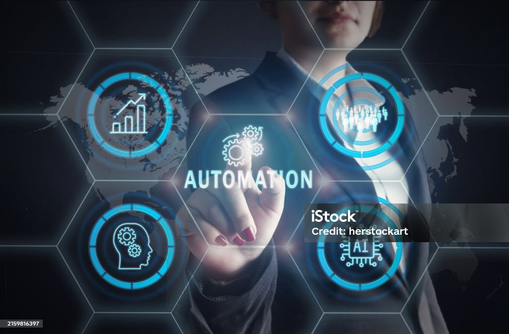
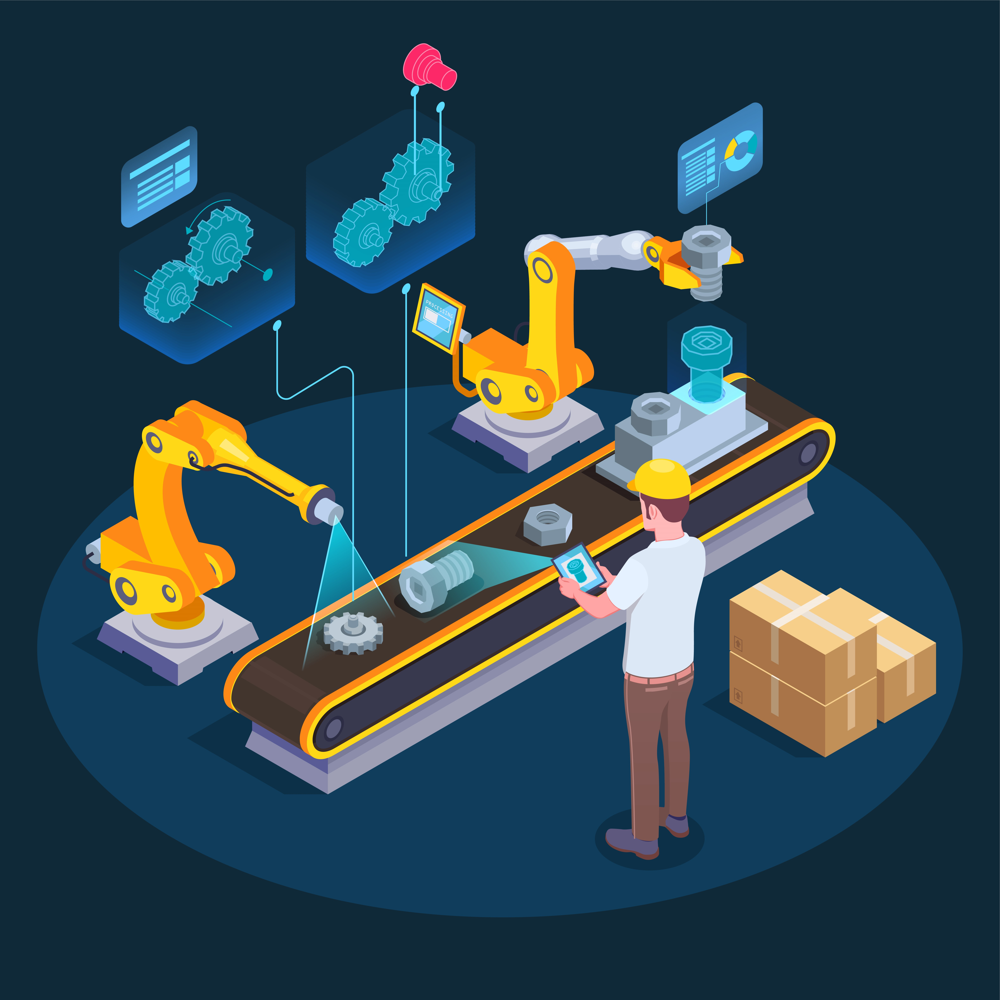
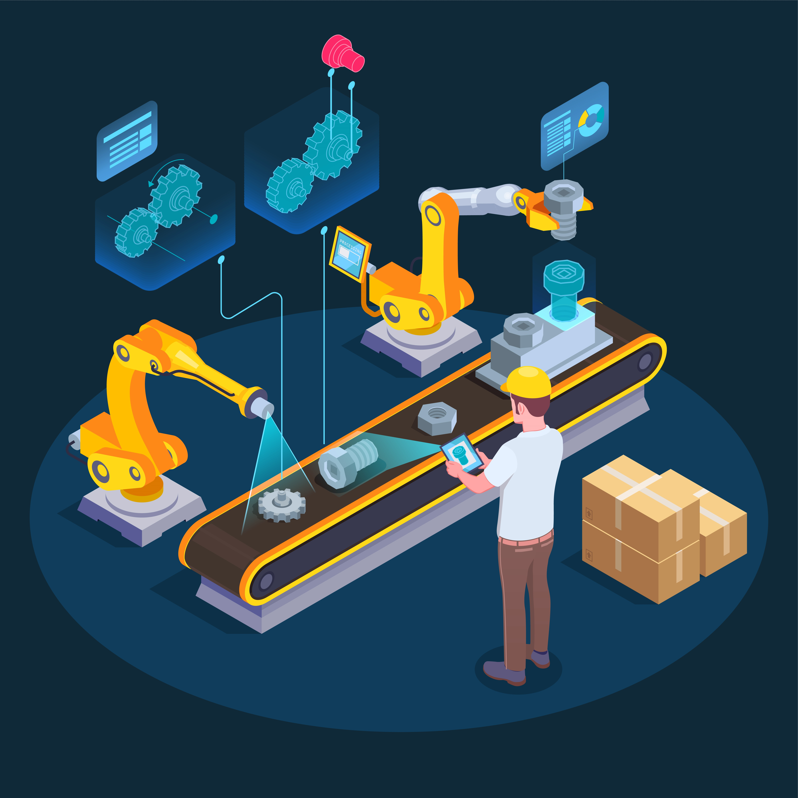
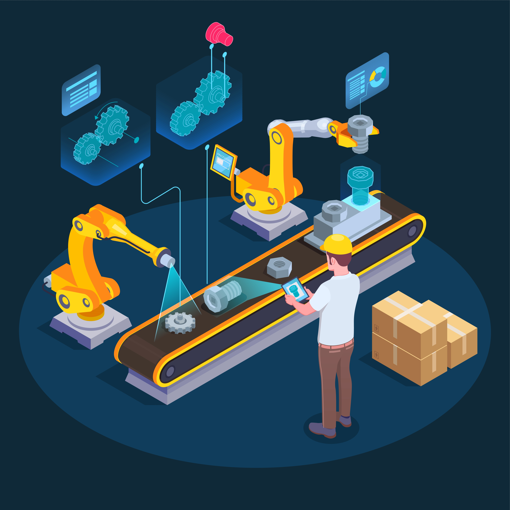

¿Qué es la Automatización?
La automatización industrial es un pilar fundamental en la carrera de Ingeniería en Sistemas Electrónicos Industriales. Esta disciplina se enfoca en el diseño, implementación y mantenimiento de sistemas que permiten a las máquinas y procesos industriales funcionar con mínima intervención humana. Los estudiantes aprenden a integrar tecnologías como sensores, actuadores, controladores lógicos programables (PLC), sistemas SCADA y redes industriales.
¿Qué se aprende?
- Diseño y programación de sistemas de control automático.
- Implementación de líneas de producción automatizadas.
- Integración de hardware y software para optimizar procesos.
- Monitoreo y supervisión de procesos industriales en tiempo real.
¿Dónde se aplica?
La automatización es clave en industrias como la manufactura, la automotriz, la farmacéutica, la alimentaria y la energética. Permite aumentar la eficiencia, reducir errores humanos, mejorar la calidad del producto y garantizar la seguridad en los entornos de trabajo.
Habilidades desarrolladas
- Capacidad analítica para identificar áreas de mejora en procesos.
- Conocimientos sólidos en electrónica, programación y redes industriales.
- Resolución de problemas y toma de decisiones basadas en datos.
Galeria de Automatización

 

